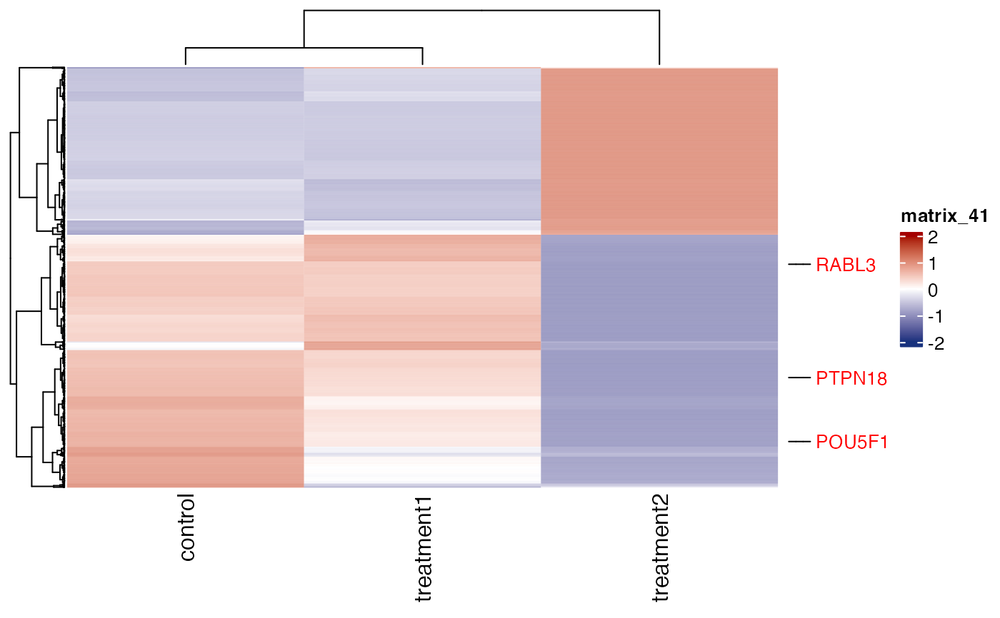
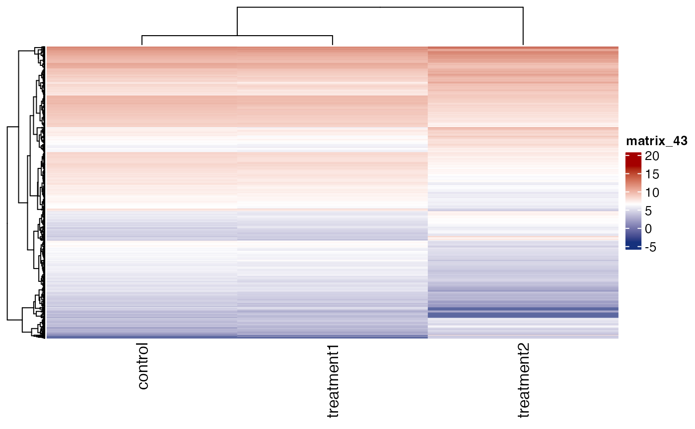
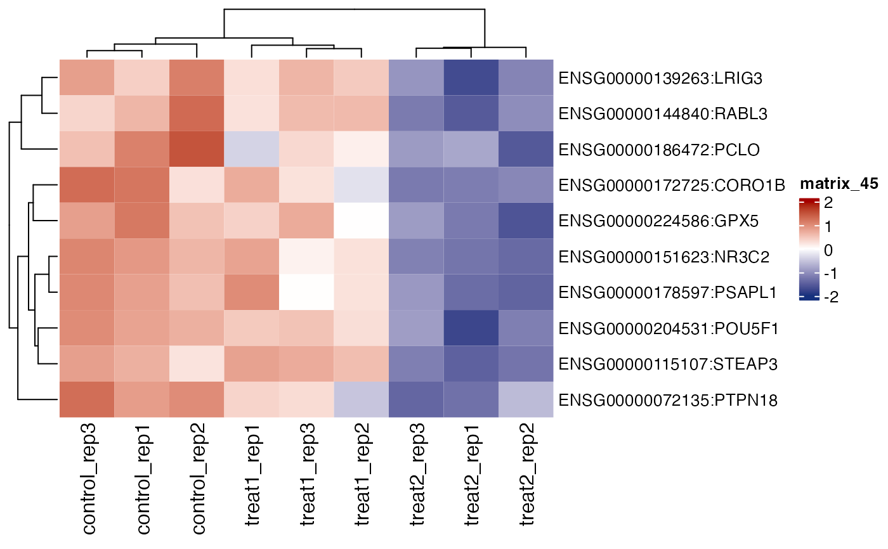
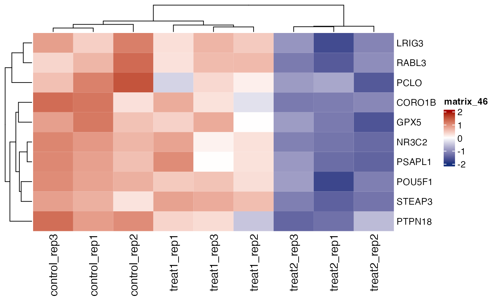

Generate a heatmap of normalised gene expression values, z-score or log2Fold-change values.
Source:R/rnaseq_related.R
get_gene_expression_heatmap.RdHeatmap is a common tool to show gene expression pattern across samples in RNA-seq experiments.
During data exploration, it is a common practice to generate several heatmaps to identify interesting
patterns of gene expression across samples. Most heatmap generating tools require data in a tabular format.
However, to prepare such a data requires significant data wrangling such as sub-setting
genes (rows) and samples (columns) from multiple R objects. Such data wrangling creates redundant, and less readable code
which increases the chances of error. Furthermore, because of less readability using the same code for another analysis
requires code cleaning and code rewriting making code less reusable.
Situations complicates even more when RNA-seq studies consist of several samples and several comparisons.
This function cut-downs several steps of data wrangling to create a heatmap of gene expression, z-score or
log2 fold-change. Given an object of the class parcutils, sample names or sample comparisons, genes to show in the heatmap
and several other arguments, the heatmap can be created quickly. The output heatmap is an output of the function ComplexHeatmap::Heatmap()
which then can be used with other functions of the ComplexHeatmap package.
Usage
get_gene_expression_heatmap(
x,
samples,
genes,
repair_genes = FALSE,
convert_log2 = FALSE,
color_default = TRUE,
col = NULL,
convert_zscore = TRUE,
summarise_replicates = TRUE,
summarise_method = "median",
show_row_names = FALSE,
cluster_rows = TRUE,
show_row_dend = TRUE,
row_names_font_size = 10,
show_column_names = TRUE,
cluster_columns = TRUE,
show_heatmap_legend = TRUE,
...
)
get_fold_change_heatmap(
x,
sample_comparisons,
genes,
repair_genes = FALSE,
color_default = TRUE,
col = NULL,
show_row_names = FALSE,
cluster_rows = TRUE,
show_row_dend = TRUE,
row_names_font_size = 10,
show_column_names = TRUE,
cluster_columns = TRUE,
show_heatmap_legend = TRUE,
...
)Arguments
- x
an abject of the class
parcutils. This is can be created using the functionrun_deseq_analysis().- samples
a character vector denoting sample names to use in the heatmap.
- genes
a character vector denoting genes to use in the heatmap.
- repair_genes
logical, default
FALSE, indicating whether to repair gene names. See details.- convert_log2
logical, default
FALSE, indicating whether to log2 transform gene expression values.- color_default
logical, default
TRUE, indicating whether to use default heatmap colors.- col
an output of
circlize::colorRamp2(), default NULL.- convert_zscore
logical, default
TRUE, indicating whether to convert gene expression values in to the z-score or not. see details.- summarise_replicates
logical, default
TRUE, indicating whether to summarise values for each gene across replicates.- summarise_method
a character string, either mean or median.
- show_row_names
logical, default
FALSE, indicating whether to show row names in the heatmap or not. Internally this argument is passed to the functionComplexHeatmap::Heatmap().- cluster_rows
logical, default
TRUE, indicating whether to cluster rows in the heatmap or not. Internally this argument is passed to the functionComplexHeatmap::Heatmap().- show_row_dend
logical, default
TRUE, indicating whether to show dendrogram in the heatmap or not. Internally this argument is passed to the functionComplexHeatmap::Heatmap().- row_names_font_size
a numeric value, default 10, indicating size of row names in the heatmap.
- show_column_names
logical, default
TRUE, indicating whether to show column names in the heatmap or not. Internally this argument is passed to the functionComplexHeatmap::Heatmap().- cluster_columns
logical, default
TRUE, indicating whether to cluster columns in the heatmap or not. Internally this argument is passed to the functionComplexHeatmap::Heatmap().- show_heatmap_legend
logical, default
TRUE, indicating whether to show heatmap legend or not.- ...
Other parameters to be passes to
ComplexHeatmap::Heatmap().- sample_comparisons
a character vector denoting sample comparisons for which heatmap of log2 fold-change to be plotted.
Value
an output of the function ComplexHeatmap::Heatmap().
Details
The function get_gene_expression_heatmap is to create a heatmap either for normalised gene expression or z-score values
while the function get_fold_change_heatmap is to create a heatmap for log2 fold-changes values.
repair_genes: Internally gene names are stored as a "gene_id:gene_symbol" format. For example, "ENSG00000187634:SAMD11". Whenrepair_genesis set toTRUEthe string corresponding to gene_id followed by ":" will be removed. This is useful when gene names to be revealed in the heatmap.convert_zscore: When set toTRUEvalues for each gene is converted into z-score. z-score is calculated by baser r functionbase::scale()with all default parameters.
Examples
count_file <- system.file("extdata","toy_counts.txt" , package = "parcutils")
count_data <- readr::read_delim(count_file, delim = "\t")
#> Rows: 5000 Columns: 10
#> ── Column specification ────────────────────────────────────────────────────────
#> Delimiter: "\t"
#> chr (1): gene_id
#> dbl (9): control_rep1, control_rep2, control_rep3, treat1_rep1, treat1_rep2,...
#>
#> ℹ Use `spec()` to retrieve the full column specification for this data.
#> ℹ Specify the column types or set `show_col_types = FALSE` to quiet this message.
sample_info <- count_data %>% colnames() %>% .[-1] %>%
tibble::tibble(samples = . , groups = rep(c("control" ,"treatment1" , "treatment2"), each = 3) )
res <- run_deseq_analysis(counts = count_data ,
sample_info = sample_info,
column_geneid = "gene_id" ,
group_numerator = c("treatment1", "treatment2") ,
group_denominator = c("control"))
#> ℹ Running DESeq2 ...
#> converting counts to integer mode
#> Warning: some variables in design formula are characters, converting to factors
#> estimating size factors
#> estimating dispersions
#> gene-wise dispersion estimates
#> mean-dispersion relationship
#> final dispersion estimates
#> fitting model and testing
#> ✔ Done.
#> ℹ Summarizing DEG ...
#> ✔ Done.
genes = parcutils::get_genes_by_regulation(x = res, sample_comparison = "treatment2_VS_control" , "both") %>% names()
get_gene_expression_heatmap(x = res, samples = c("control" ,"treatment1" , "treatment2"), genes = genes)

# plot raw expression values
get_gene_expression_heatmap(x = res, samples = c("control" ,"treatment1" , "treatment2"),
genes = genes, convert_zscore = FALSE)
# plot log2 expression values
get_gene_expression_heatmap(x = res, samples = c("control" ,"treatment1" , "treatment2"),
genes = genes, convert_zscore = FALSE,convert_log2 = TRUE)

# plot all replicates
get_gene_expression_heatmap(x = res, samples = c("control" ,"treatment1" , "treatment2"),
genes = genes, convert_zscore = TRUE, summarise_replicates = FALSE)
# show gene names
get_gene_expression_heatmap(x = res, samples = c("control" ,"treatment1" , "treatment2"),
genes = genes[1:10], convert_zscore = TRUE, summarise_replicates = FALSE , show_row_names = TRUE)

# repair gene names
get_gene_expression_heatmap(x = res, samples = c("control" ,"treatment1" , "treatment2"),
genes = genes[1:10], convert_zscore = TRUE, summarise_replicates = FALSE, show_row_names = TRUE, repair_genes = TRUE)

# fold change heatmap
get_fold_change_heatmap(x = res , sample_comparisons = c("treatment2_VS_control" ,"treatment1_VS_control") ,
genes = genes , cluster_columns = FALSE , name = "Log2FC")